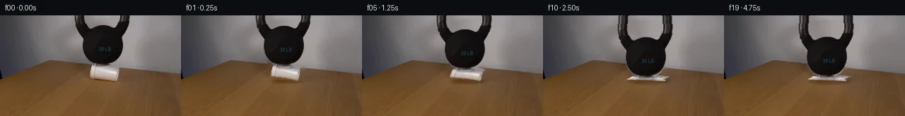

![首帧]()

Round 00
2026-11-05T10:52:19.508538+00:00像素候选变化代码 +258/−0inspection 更新
pixels 91445e113ed76eaf · code 227f737fb663f61a
查看本轮 generate.py 真实 diff
--- previous/generate.py +++ current/generate.py @@ -0,0 +1,258 @@ +#!/usr/bin/env python3 +"""Generate a photographed-pixel animation of a foam cup crushing under a kettlebell. + +The supplied first frame is the only scene source. The script segments and moves +its photographed bell pixels, mesh-warps its cup pixels, and reconstructs only the +small background areas exposed by that motion. +""" + +from pathlib import Path + +import cv2 +import numpy as np +from PIL import Image, ImageDraw, ImageFont + +import artifact_io + + +ROOT = Path(__file__).resolve().parent +H, W = 144, 256 + + +def bell_matte(rgb: np.ndarray) -> np.ndarray: + """Build the kettlebell silhouette while retaining the open handle.""" + gray = cv2.cvtColor(rgb, cv2.COLOR_RGB2GRAY) + chroma = rgb.max(axis=2).astype(np.int16) - rgb.min(axis=2).astype(np.int16) + matte = np.zeros((H, W), np.uint8) + + # The photographed body is solid below the handle/body junction. Row-wise + # bounds follow the real anti-aliased outline measured in frame zero. + knots_y = np.array([17, 20, 25, 30, 35, 45, 50, 55, 60, 65, 70, 73]) + knots_l = np.array([111, 109, 112, 115, 117, 117, 118, 119, 121, 126, 132, 139]) + knots_r = np.array([179, 178, 175, 173, 173, 173, 172, 170, 168, 164, 158, 153]) + for yy in range(17, 74): + left = int(round(np.interp(yy, knots_y, knots_l))) + right = int(round(np.interp(yy, knots_y, knots_r))) + matte[yy, left : right + 1] = 255 + + # Above row 17 only the two sides of the open handle and the emerging body + # are opaque. Thresholding here preserves the actual hole and edge shape. + top = (gray < 118) & (chroma < 42) + xx = np.arange(W)[None, :] + yy = np.arange(H)[:, None] + top &= (xx >= 102) & (xx <= 186) & (yy < 18) + top = cv2.morphologyEx(top.astype(np.uint8), cv2.MORPH_CLOSE, np.ones((3, 3), np.uint8)) + matte[top > 0] = 255 + + # Smooth one-pixel photographic antialias without expanding the silhouette + # enough to pick up the surrounding wall. + return cv2.GaussianBlur(matte, (0, 0), 0.62) + + +def cup_matte(rgb: np.ndarray) -> np.ndarray: + """Extract the neutral white cup from the warm, chromatic wood.""" + r, g, b = [rgb[:, :, i].astype(np.int16) for i in range(3)] + chroma = rgb.max(axis=2).astype(np.int16) - rgb.min(axis=2).astype(np.int16) + candidate = (r > 120) & (g > 108) & (b > 100) & (chroma < 52) + matte = np.zeros((H, W), np.uint8) + + # Measured cup envelope. Its lower-right taper is important: the original + # cup is seen obliquely rather than as a perfect rectangle. + envelope = [ + (68, 128, 162), (69, 128, 164), (70, 128, 166), (71, 127, 168), + (72, 126, 169), (73, 126, 170), (74, 126, 170), (75, 126, 170), + (76, 126, 170), (77, 126, 170), (78, 126, 170), (79, 126, 170), + (80, 126, 170), (81, 126, 170), (82, 126, 170), (83, 126, 170), + (84, 126, 170), (85, 126, 170), (86, 128, 169), (87, 134, 169), + (88, 142, 169), (89, 149, 169), (90, 153, 169), (91, 157, 168), + (92, 160, 168), (93, 162, 167), (94, 163, 167), + ] + for y, left, right in envelope: + row = candidate[y, left : right + 1] + matte[y, left : right + 1][row] = 255 + matte = cv2.morphologyEx(matte, cv2.MORPH_CLOSE, np.ones((3, 3), np.uint8)) + return cv2.GaussianBlur(matte, (0, 0), 0.68) + + +def clean_plate(rgb: np.ndarray, bell_a: np.ndarray, cup_a: np.ndarray) -> np.ndarray: + """Inpaint the limited wall/table area revealed by the moving objects.""" + remove = np.maximum(bell_a, cup_a) + remove = cv2.dilate((remove > 10).astype(np.uint8) * 255, np.ones((7, 7), np.uint8)) + plate = cv2.inpaint(cv2.cvtColor(rgb, cv2.COLOR_RGB2BGR), remove, 7, cv2.INPAINT_TELEA) + plate = cv2.cvtColor(plate, cv2.COLOR_BGR2RGB) + + # Telea can leave small radial ripples across a large fill. A locally + # smoothed alternative is blended only in the removed area, leaving all + # untouched source pixels byte-identical. + smooth = cv2.GaussianBlur(plate, (0, 0), 2.0) … diff truncated; 171 more lines …